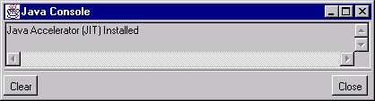
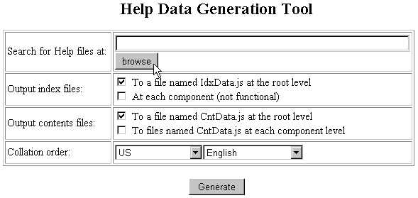

0. Make sure you're running on a localised version of Windows
95 / NT matching the target language.
0.5 If you're localising a double-byte flavour of Communicator, a few
special steps need to be done to pre- and post-process the files.
1. Launch Communicator 4.x
2. Bring up the Java console from Communicator | Java console menu
item. A window resembling the following will appear:

This window will display messages from the NetHelp Builder when the
tool is run. You can copy/paste messages from the console to any text document
for later reference (for example, to be included in an e-mail asking "what
the heck is going on here".)
3. Bring up the NetHelp Builder applet by opening the file "tool.html" in the builder-10 directory. You can do this by either clicking on this link or typing "file:///C|/" in the Location field in the Communicator window and navigating through the folders to the document. (Replace "C" with your actual drive reference.)
MAKE SURE YOU'RE USING VERSION 1.0 OF THE NETHELP BUILDER!
NOTE: It is important that the Location field of Communicator displays the correct path. If there are less than three slashes ("/") before the drive letter, it is possible that NetHelp Builder will not work properly.
After the tool.html document loads, the Communicator window will look
something like this:

4. Choose the location of the NetHelp localised source files by choosing
a file from the top-level NetHelp directory. Click the "browse" button
to do this.
NOTE: If you're launching the NetHelp Builder for the first time, there will be an Java applet security message:

Choose the "Remember this decision" option as above and click "Grant".
Select any file from the NetHelp directory. The "Search for help files" field should now display the path to the localised NetHelp content directory.
Note: Make sure you select either the "Communicator 4.x" or "Navigator 4.x" directory as the hierarchy is significant! If the HTML files have been localised outside of these directories, copy the localised ones back to their original locations.
5. Select the sorting order you require. If one is missing, edit the "tool1.html" document in the "builder-10" directory and add an entry for the country and the language you require to the list for "Collation order". The country and language codes follow the ISO standard.
6. Click "Generate".
For first time users, there will be another Java security alert:
Choose the "Remember this decision" option as above and click "Grant".
Once the NetHelp Builder runs you'll see messages in the Java console and eventually there will be a message "Done." Then you're done. Both Index and Table of Contents files (IdxData.js and CntData.js) have been generated at the directory you chose.
Check the Java console messages for any errors.
Starting execution from D:\help\comm-4x with index: 1 and contents
1
Searching from D:\help\comm-4x
Searching D:\help\comm-4x
Is a dir
Searching D:\help\comm-4x\netscape
Is a dir
Searching D:\help\comm-4x\netscape\collabra
Is a dir
Creating help project: D:\help\comm-4x\netscape\collabra_ _ help.hpf_
netscape/collabra
Project {netscape/collabra} (located at: file:///D|//help/comm-403/netscape/collabra/help.hpf)
Searching D:\help\comm-4x\netscape\composer
Is a dir
Creating help project: D:\help\comm-4x\netscape\composer_ _ help.hpf_
netscape/composer
Project {netscape/composer} (located at: file:///D|//help/comm-403/netscape/composer/help.hpf)
Searching D:\help\comm-4x\netscape\confernc
Is a dir
Creating help project: D:\help\comm-4x\netscape\confernc_ _ help.hpf_
netscape/confernc
Project {netscape/confernc} (located at: file:///D|//help/comm-403/netscape/confernc/help.hpf)
Searching D:\help\comm-4x\netscape\home
Is a dir
Creating help project: D:\help\comm-4x\netscape\home_ _ help.hpf_
netscape/home
Project {netscape/home} (located at: file:///D|//help/comm-403/netscape/home/help.hpf)
Searching D:\help\comm-4x\netscape\messengr
Is a dir
Creating help project: D:\help\comm-4x\netscape\messengr_ _ help.hpf_
netscape/messengr
Project {netscape/messengr} (located at: file:///D|//help/comm-403/netscape/messengr/help.hpf)
Searching D:\help\comm-4x\netscape\navigatr
Is a dir
Creating help project: D:\help\comm-4x\netscape\navigatr_ _ help.hpf_
netscape/navigatr
Project {netscape/navigatr} (located at: file:///D|//help/comm-403/netscape/navigatr/help.hpf)
Searching D:\help\comm-4x\netscape\netcastr
Is a dir
Creating help project: D:\help\comm-4x\netscape\netcastr_ _ help.hpf_
netscape/netcastr
Project {netscape/netcastr} (located at: file:///D|//help/comm-403/netscape/netcastr/help.hpf)
Searching D:\help\comm-4x\netscape\shared
Is a dir
Processing: Project {netscape/collabra} (located at: file:///D|//help/comm-4x/netscape/collabra/help.hpf)
=======file:/D|//help/comm-4x/netscape/collabra/help.hpf
Reading project netscape/collabra
== Scanning page: file:/D|//help/comm-4x/netscape/collabra/coll.htm
Processing: Project {netscape/composer} (located at: file:///D|//help/comm-4x/netscape/composer/help.hpf)
=======file:/D|//help/comm-4x/netscape/composer/help.hpf
Reading project netscape/composer
== Scanning page: file:/D|//help/comm-4x/netscape/composer/comp.htm
Processing: Project {netscape/confernc} (located at: file:///D|//help/comm-4x/netscape/confernc/help.hpf)
=======file:/D|//help/comm-4x/netscape/confernc/help.hpf
Reading project netscape/confernc
== Scanning page: file:/D|//help/comm-4x/netscape/confernc/conf.htm
Processing: Project {netscape/home} (located at: file:///D|//help/comm-4x/netscape/home/help.hpf)
=======file:/D|//help/comm-4x/netscape/home/help.hpf
Reading project netscape/home
== Scanning page: file:/D|//help/comm-4x/netscape/home/home.htm
Processing: Project {netscape/messengr} (located at: file:///D|//help/comm-4x/netscape/messengr/help.hpf)
=======file:/D|//help/comm-4x/netscape/messengr/help.hpf
Reading project netscape/messengr
== Scanning page: file:/D|//help/comm-403/netscape/messengr/mess.htm
Processing: Project {netscape/navigatr} (located at: file:///D|//help/comm-4x/netscape/navigatr/help.hpf)
=======file:/D|//help/comm-4x/netscape/navigatr/help.hpf
Reading project netscape/navigatr
== Scanning page: file:/D|//help/comm-4x/netscape/navigatr/nav.htm
Processing: Project {netscape/netcastr} (located at: file:///D|//help/comm-4x/netscape/netcastr/help.hpf)
=======file:/D|//help/comm-4x/netscape/netcastr/help.hpf
Reading project netscape/netcastr
== Scanning page: file:/D|//help/comm-4x/netscape/netcastr/net.htm
============== generating master index ==============
============== generating master TOC ==============
Done.